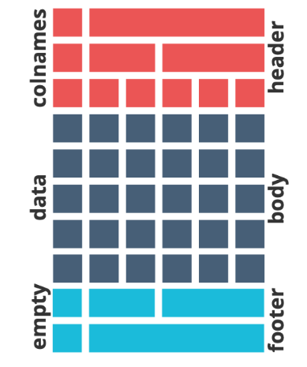

datos# A tibble: 10 × 1
Edad
<dbl>
1 34
2 56
3 43
4 21
5 67
6 89
7 54
8 32
9 16
10 76Con las herramientas conocidas hasta el momento sabemos obtener resúmenes estadísticos de variables cuantitativas usando a summarise() y estratificados a partir de group_by() o el argumento by = de summarise().
Para variables categóricas hemos producido tablas de frecuencias con count() y cuando necesitamos calculos por fila aplicamos operadores simples como la suma o aprovechamos las funciones rowwise() y c_across().
En este documento explicaremos como usar otras funciones estadísticas y otros paquetes para presentar de mejor manera los resultados.
El interprete de R trae muchas funciones estadísticas descriptivas y para inferencia disponibles en su versión base pero ninguna de estas son compatibles con la filosofia de trabajo de tidyverse. Es por eso que para utilizar funciones como mean() o median() por ejemplo, debemos introducirlas dentro de estructuras como summarise(). Las funciones de este tipo trabajan sobre vectores y no tienen en cuenta a los dataframes que encapsulan a los vectores como variables.
Tenemos estos datos y vamos a calcular su media.
datos# A tibble: 10 × 1
Edad
<dbl>
1 34
2 56
3 43
4 21
5 67
6 89
7 54
8 32
9 16
10 76Si lo abordamos con la sintaxis R base:
# Edad es una variable de datos pero llamada así es un vector numérico
datos$Edad [1] 34 56 43 21 67 89 54 32 16 76# preguntamos si es vector
is.vector(datos$Edad)[1] TRUE# ejecutamos mean() sobre ese vector
mean(datos$Edad)[1] 48.8Si lo abordamos con tuberías.
library(tidyverse)datos |>
mean(Edad)Warning in mean.default(datos, Edad): argument is not numeric or logical:
returning NA[1] NANecesitamos la función summarise() para que funcione bien.
datos |>
summarise(media_edad = mean(Edad))# A tibble: 1 × 1
media_edad
<dbl>
1 48.8Cuando los estadísticos son más complejos que estas funciones descriptivas y devuelven un conjunto de resultados en forma de lista ni siquiera alcanza con aplicarlas dentro de un andamiaje de tidyverse como summarise().
Un ejemplo de ello, son todas las funciones de R base para comparaciones de inferencia. Tomemos el caso de la prueba t de Student, que sirve para comparar las medias de muestras aproximadamente normales.
La función de R base es t.test() y sus argumentos obligatorios son x e y o bien utilizar un formato fórmula (var1 ~ var2)
Para comparar dos conjuntos de datos con la forma x e y los datos tienen que estar en dos variables separadas y por lo tanto no cumplir con el formato “ordenado”.
datos# A tibble: 10 × 2
Edad1 Edad2
<dbl> <dbl>
1 34 45
2 56 76
3 43 32
4 21 12
5 67 14
6 89 18
7 54 20
8 32 54
9 16 98
10 76 32Aplicamos la función teniendo en cuenta que lo que ingresa en cada argumento es un vector (dataframe$variable)
t.test(x = datos$Edad1, y = datos$Edad2)
Welch Two Sample t-test
data: datos$Edad1 and datos$Edad2
t = 0.73815, df = 17.458, p-value = 0.4702
alternative hypothesis: true difference in means is not equal to 0
95 percent confidence interval:
-16.11732 33.51732
sample estimates:
mean of x mean of y
48.8 40.1 El resultado da un valor de probabilidad de 0,47 lo que indica que no hay diferencias significativas entre las medias de las dos muestras.
Para usar el formato fórmula es necesario que la tabla de datos cumpla con el formato “ordenado”, quedando:
datos# A tibble: 20 × 2
Muestra Edad
<dbl> <dbl>
1 1 34
2 1 56
3 1 43
4 1 21
5 1 67
6 1 89
7 1 54
8 1 32
9 1 16
10 1 76
11 2 45
12 2 76
13 2 32
14 2 12
15 2 14
16 2 18
17 2 20
18 2 54
19 2 98
20 2 32En este caso el t.test() lleva formula y datos en el argumento data.
t.test(formula = Edad ~ Muestra, data = datos)
Welch Two Sample t-test
data: Edad by Muestra
t = 0.73815, df = 17.458, p-value = 0.4702
alternative hypothesis: true difference in means between group 1 and group 2 is not equal to 0
95 percent confidence interval:
-16.11732 33.51732
sample estimates:
mean in group 1 mean in group 2
48.8 40.1 Lo importante acá no es el resultado sino la forma en que lo devuelve. Observaran que no se trata de un formato ordenado ni se parece a una tabla. El tidyverse siempre (salvo raras excepciones, como con pull()) devuelve una tabla de datos ordenada y por eso todas estas funciones son incompatibles, aún utilizando un summarise() y nos dan error:
datos |>
summarise(IC = t.test(Edad ~ Muestra))Error in `summarise()`:
ℹ In argument: `IC = t.test(Edad ~ Muestra)`.
Caused by error:
! `IC` must be a vector, not a <htest> object.Hace unos años a un desarrollador se le ocurrió crear un paquete que contiene todas estas funciones (y algunas más) del R base en espejo pero compatibles con tidyverse, esto es: reciben un dataframe y devuelven un dataframe.
El paquete se llama rstatix y provee un marco simple e intuitivo compatible con el uso de tuberías, coherente con la filosofía de diseño “tidyverse”, para realizar pruebas estadísticas descriptivas básicas y otras más avanzadas de inferencia y modelado.
Las funciones relacionadas con la inferencia estadística, como t-test, ANOVAS, correlaciones y tamaños de efecto, así como también valores p ajustados o agregados de etiquetas de significación no serán explicados en este curso pero aquellxs estudiantes que les interese profundizar y utilizarlas le pueden sacar un provecho muy útil a este paquete, cuyo sitio es https://rpkgs.datanovia.com/rstatix/index.html.
Respecto del ejemplo anterior la función de rstatix que reemplaza al t.test() tradicional es t_test(), es decir que al modo tidyverse reemplaza en el nombre el punto por un guión bajo (sucede en todas las funciones del paquete).
library(rstatix)
datos |>
t_test(Edad ~ Muestra, conf.level = .95)# A tibble: 1 × 8
.y. group1 group2 n1 n2 statistic df p
* <chr> <chr> <chr> <int> <int> <dbl> <dbl> <dbl>
1 Edad 1 2 10 10 0.738 17.5 0.47Ahora si, el resultado es una tabla de 8 variables por una fila, lo que nos va a permitir poder continuar el trabajo con tuberías. Debajo seleccionamos solo la variable que queremos ver (valor de p).
datos |>
t_test(Edad ~ Muestra, conf.level = .95) |>
select(p)# A tibble: 1 × 1
p
<dbl>
1 0.47Dentro de los estadísticos descriptivos la función get_summary_stats() devuelve un resumen univariado para variables cuantitativas.
datos |>
get_summary_stats(Edad)# A tibble: 1 × 13
variable n min max median q1 q3 iqr mad mean sd se
<fct> <dbl> <dbl> <dbl> <dbl> <dbl> <dbl> <dbl> <dbl> <dbl> <dbl> <dbl>
1 Edad 20 12 98 38.5 20.8 58.8 38 26.7 44.4 26.0 5.82
# ℹ 1 more variable: ci <dbl>Y al ser compatible con tidyverse se puede estratificar con group_by().
datos |>
group_by(Muestra) |>
get_summary_stats(Edad)# A tibble: 2 × 14
Muestra variable n min max median q1 q3 iqr mad mean sd
<dbl> <fct> <dbl> <dbl> <dbl> <dbl> <dbl> <dbl> <dbl> <dbl> <dbl> <dbl>
1 1 Edad 10 16 89 48.5 32.5 64.2 31.8 25.9 48.8 23.9
2 2 Edad 10 12 98 32 18.5 51.8 33.2 23.7 40.1 28.6
# ℹ 2 more variables: se <dbl>, ci <dbl>La función freq_table() construye tablas con las variables categóricas.
datos |>
freq_table(Sexo)# A tibble: 2 × 3
Sexo n prop
<chr> <int> <dbl>
1 Mujer 14 70
2 Varon 6 30También agregando otra variables que estratifiquen la salida.
datos |>
freq_table(Sexo, Fuma)# A tibble: 4 × 4
Sexo Fuma n prop
<chr> <chr> <int> <dbl>
1 Mujer No 10 71.4
2 Mujer Si 4 28.6
3 Varon No 2 33.3
4 Varon Si 4 66.7Una opción más completa para construir tablas y tablas de contingencia es usar la familia de funciones tabyl() del paquete janitor.
library(janitor)
datos |>
tabyl(Sexo) Sexo n percent
Mujer 14 0.7
Varon 6 0.3Calcula las frecuencias absolutas y relativas de variables categóricas de forma similar a freq_table() pero se le pueden modificar sus argumentos y asociar otras funciones del paquete mediante tuberías para obtener mejores resultados (también es compatible con tidyverse).
datos |>
tabyl(Sexo) |>
adorn_totals(where = "row") %>% # agregamos totales
adorn_pct_formatting(digits = 2) # porcentaje con dos decimales Sexo n percent
Mujer 14 70.00%
Varon 6 30.00%
Total 20 100.00%La forma más adecuada de describir la relación entre dos variables categóricas es a partir de la construcción de una tabla de contingencia. Para ello se introduce en cada fila de la tabla las categorías de una de las variables y las categorías de la otra variable se asocian a cada una de las columnas de la tabla, en cada celda de la tabla aparecerá el número de observaciones correspondientes a la combinación oportuna de ambas variables. Si bien freq_table() hace lo mismo, respeta la salida ordenada lo que dificulta su lectura.
Con la misma función tabyl() se puede realizar una tabla de contingencia, incluyendo a la variable Fuma.
datos |>
tabyl(Sexo, Fuma) Sexo No Si
Mujer 10 4
Varon 2 4Recordemos que el orden dentro de los paréntesis de la función es igual al de los índices del lenguage, el primer argumento es la variable que aparecerá en las filas y el segundo la variable de las columnas. Por ese motivo, en la tabla de contingencia absoluta tenemos el Sexo en las filas y a Fuma en las columnas.
Su salida se puede mejorar con totales por columna y que aparezca el nombre de la variable que esta en la columna:
datos |>
tabyl(Sexo, Fuma) |>
adorn_title(placement = "combined") |>
adorn_totals(where = "row") Sexo/Fuma No Si
Mujer 10 4
Varon 2 4
Total 12 8También haciendo que los valores sean porcentuales por fila.
datos |>
tabyl(Sexo, Fuma) |>
adorn_title(placement = "combined") |>
adorn_totals(where = "row") |>
adorn_percentages(denominator = "row") |> # % por fila
adorn_pct_formatting(digits = 2) # redondea con 2 decimales Sexo/Fuma No Si
Mujer 71.43% 28.57%
Varon 33.33% 66.67%
Total 60.00% 40.00%Incoporamos valores absolutos entre paréntesis.
datos |>
tabyl(Sexo, Fuma) |>
adorn_totals(where = "row") |>
adorn_percentages(denominator = "row") |>
adorn_pct_formatting(digits = 2) |>
adorn_ns() |>
adorn_title() Fuma
Sexo No Si
Mujer 71.43% (10) 28.57% (4)
Varon 33.33% (2) 66.67% (4)
Total 60.00% (12) 40.00% (8)El paquete trae muchas funciones que se integran para construir tablas complejas. Más de estas opciones las pueden encontrar en el sitio oficial del paquete janitor
Cuando necesitemos presentar resultados estadísticos combinados, producto de variables cuanti y cualitativas a la vez, podemos hechar mano a funciones del paquete gtsummary.

Esta librería proporciona una forma elegante y flexible de crear tablas analíticas y de resumen, univariadas, estratificadas y complejas.
Integra estimaciones estadísticas predefinidas y se pueden personalizar a gusto, interactuando con otros paquetes como gt, labelled y flextable.
En el sitio del desarrollador (gtsummary), encontrarán mucha documentación para adecuar los requerimientos de la salida buscada.
Mostramos un ejemplo en función de los datos del archivo “base2023r.xlsx”.
library(readxl)
library(gtsummary)
datos <- read_excel("datos/base2023r.xlsx")
datos |>
select(EDAD_DIAGNOSTICO, SEXO, MOTIVO_CONSULTA) |>
tbl_summary()Characteristic |
N = 200 1 |
|---|---|
| EDAD_DIAGNOSTICO | 33 (23, 49) |
| SEXO | |
| A | 1 (0.5%) |
| F | 68 (34%) |
| M | 131 (66%) |
| MOTIVO_CONSULTA | |
| Contacto | 2 (11%) |
| Examen de Salud | 1 (5.3%) |
| Sintomático Respiratorio | 16 (84%) |
| Unknown | 181 |
| 1
Median (Q1, Q3); n (%) |
|
Quizás lo mejor sea presentar los datos estratificados por sexo, por ejmplo. Además configuramos algunos argumentos mas.
datos |>
select(EDAD_DIAGNOSTICO, SEXO, MOTIVO_CONSULTA) |>
filter(SEXO != "A") |>
tbl_summary(by = SEXO,
statistic = list(
all_continuous() ~ "{mean} ({sd})",
all_categorical() ~ "{n} / {N} ({p}%)"),
digits = all_continuous() ~ 1,
missing_text = "Sin dato") |>
modify_header(label ~ "**Variable**")Variable |
F |
M |
|---|---|---|
| EDAD_DIAGNOSTICO | 33.2 (19.1) | 39.1 (18.2) |
| MOTIVO_CONSULTA | ||
| Contacto | 2 / 7 (29%) | 0 / 12 (0%) |
| Examen de Salud | 1 / 7 (14%) | 0 / 12 (0%) |
| Sintomático Respiratorio | 4 / 7 (57%) | 12 / 12 (100%) |
| Sin dato | 61 | 119 |
| 1
Mean (SD); n / N (%) |
||
El argumento statistic permite que, mediante una lista, configuremos los estadísticos a presentar. Para todas las variables continuas seleccionamos la media (mean) y el desvío estandar (sd); para todas las variables categóricas el conteo de cada categoría y el porcentaje. Los decimales de las variables continuas quedan definidos en 1 y cuando aparezcan valores NA serán expresados con la etiqueta “Sin dato”. Por último, la cabecera de la tabla en la comuna de las variables será “Variable” en negrita.

Estas tablas de presentación de resultados se pueden conectar con el paquete flextable para exportarlas en diferentes formatos, como Word, html, PDF, PowerPoint o imagen y además se vincula con el contenido en estructuras de archivos rmarkdown y/o Quarto.
Una salida interesante es poder guardar la tabla en formato Word (.docx), porque luego podemos editarla facilmente, para esto la función as_flex_table() convierte al tbl_summary() de gtsummry en clase flextable.
library(flextable)
tabla1 <- datos |>
select(EDAD_DIAGNOSTICO, SEXO, MOTIVO_CONSULTA) |>
filter(SEXO != "A") |>
tbl_summary(by = SEXO,
statistic = list(
all_continuous() ~ "{mean} ({sd})",
all_categorical() ~ "{n} / {N} ({p}%)"),
digits = all_continuous() ~ 1,
missing_text = "Sin dato") |>
modify_header(label ~ "**Variable**") |>
as_flex_table() |>
autofit() |> # ajuste automático
theme_box() # tema boxLuego es posible exportar fácilmente una o más tablas a partir de los objetos flextables almacenados a documentos tipo html, RTF, Word, PowerPoint o PNG.
Un ejemplo para salidas tipo Word es: save_as_docx()
save_as_docx(
"tabla 1" = tabla1,
path = "/resultados/tabla_exportada.docx")Exporta el objeto tabla1 en el archivo tabla_exportada.docx dentro de la carpeta resultados.
Todos los objetos de clase flextable están compuestos por tres partes:
